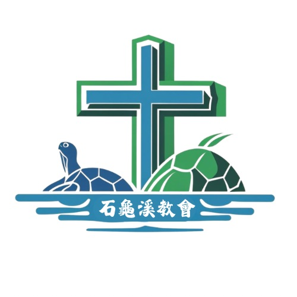
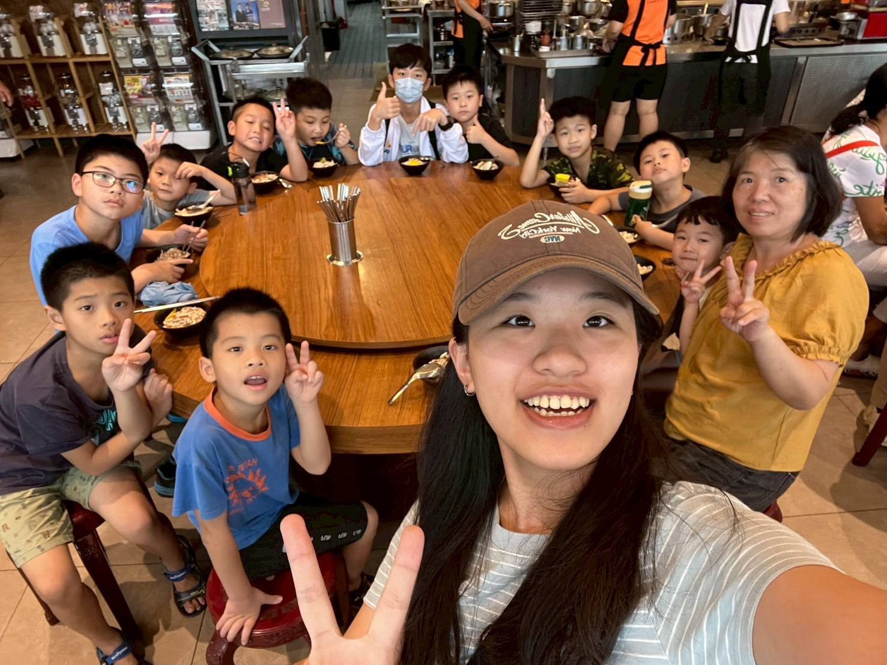
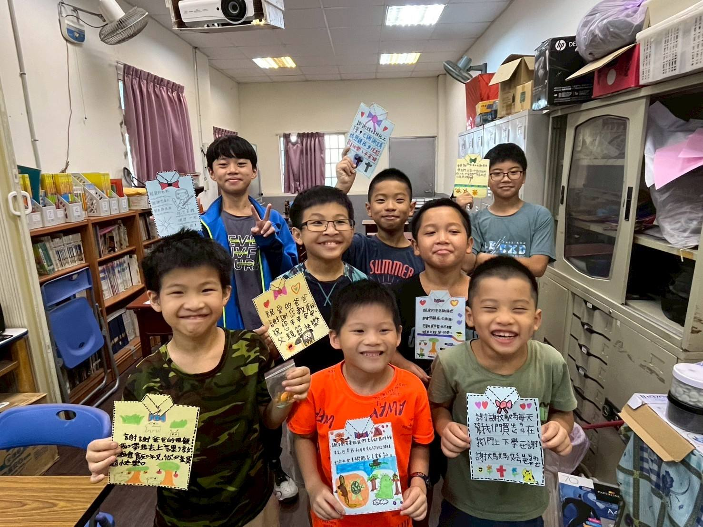
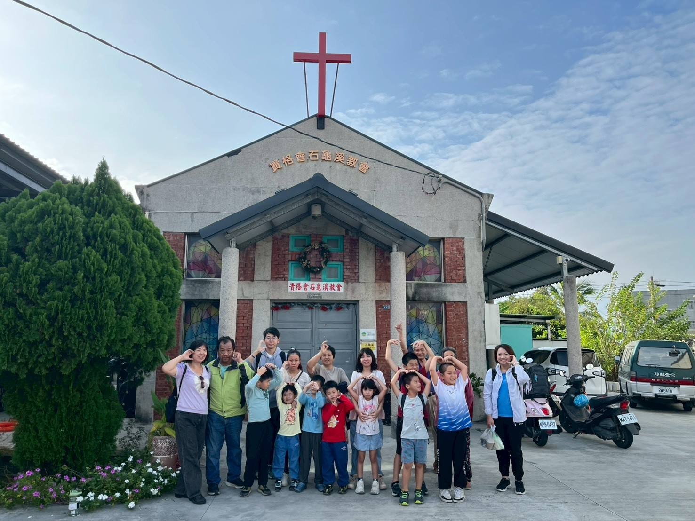

教會簡介
石龜溪教會位於雲林縣斗南鎮，是一間扎根地方、承載歷史與信仰的基督教會。自1958年創立以來，教會持續在這片土地上傳遞福音，成為在地居民心靈的依靠與屬靈的家。
歷史與傳承
石龜溪教會創立於1958年6月24日，由慕維德牧師開拓建立。在早期資源有限的環境中，牧師憑著堅定的信心與對福音的熱忱，將信仰帶入社區，逐步建立起穩固的教會根基。這段歷史，不僅見證了教會的誕生，也象徵著信仰在困境中成長與延續的力量。
2018年10月1日起，由邱菊停傳道與其家人承接教會服事，帶領教會邁向新的階段。在新的世代中，教會持續維持穩定的聚會與多元事工，關懷不同年齡層的需要，讓信仰能貼近生活、走入人群。
教會資訊

聚會與活動時間
- 晨禱：週二至週六 06:00–07:00
- 陪讀班：週一 12:30–18:00
- 抱雛之窩：週三 14:30–15:30
- 禱告會：週四 19:30–20:30
- 鼓動時光：週六 09:30–10:30
- 青少年小組：週六 11:00–12:30
- 主日聚會：週日 15:00–16:00
- 兒童主日學：週日 15:00–16:00
小太陽陪讀班
小太陽陪讀班是石龜溪教會陪伴孩子成長的重要事工，盼望在課後提供一個溫暖、安全且充滿關懷的空間，讓孩子們能安心寫作業、培養學習習慣，也在日常互動中感受到被接納與陪伴。
在陪讀班裡，除了課業指導之外，孩子們也會一起用餐、參與活動、學習分享與感恩。透過老師與同工們細心的照顧，讓每位孩子都能在愛中成長，發展自信，並在生活中建立良好的品格與人際關係。
- 課後陪伴提供穩定的學習環境，幫助孩子完成作業與建立規律。
- 生活關懷透過陪伴、對話與互動，讓孩子在成長過程中更有安全感。
- 品格培育在日常中學習尊重、合作、感恩與彼此扶持。



我們期待
石龜溪教會是一個充滿愛與接納的地方。在這裡，無論是長期信徒，或是第一次走進教會的朋友，都能感受到溫暖與陪伴。透過敬拜、禱告與彼此關懷，教會不僅建立信仰，也建立人與人之間真誠的連結。
在變動快速的現代社會中，石龜溪教會依然安靜守護著初心，像一盞溫暖的燈，在地方角落持續散發平安、盼望與力量。